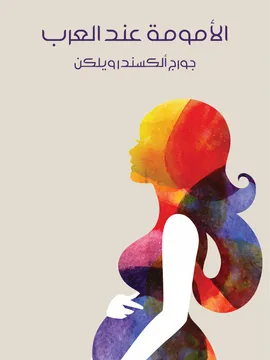

الأمومة عند العرب

قراءة عربية أصلية محددة النطاق في الصفحات 11 إلى 16 من ملف PDF المرتبط، وليست تلخيصا كاملا للكتاب. نناقش ما تدعمه هذه المقاطع فقط.
الأمومة أقدم من الأبوة: مدخل إلى مسألة القرابة
يستهل الكتاب بأن مسألة «الأمومة»، أي القرابة من طرف الأم، من المسائل العلمية التي استلفتت أنظار العلماء حديثًا؛ فقد بان لهم أنها أقدم عهدًا من الأبوة، وأنها أمر يعم جميع شعوب الأرض حتى لا يكاد يوجد قوم إلا وللأمومة عندهم آثار حية باقية إلى اليوم أو آثار تدل على شيوعها سابقًا وتقدمها على الأبوة. ويذكر المترجم أن بحثه ينصب على هذه المسألة عند الشعوب السامية عمومًا والعرب خصوصًا، وأن الذي دفعه إليه تأليف المستشرق روبرتسون سميث الذي ذكر جملة أمور تدل على شيوع الأمومة عند العرب لكنه لم يأت بها متعمدًا بل على سبيل الصدفة. ويعرض معنى «التوتمية»، وهي أن تتخذ القبيلة حيوانًا تعبده وتسمى باسمه وتنتسب إليه، مبينًا أن تلقب كثير من القبائل العربية بأسماء بعض الحيوانات أمر لا ريب فيه، والدليل قبائل أسد وكلب وظبيان وأوس وثور وعقاب وبنو حمامة إلى غير ذلك مما يكاد يخرج عن الحصر.
زاوية وحدود القراءة
قراءة موجزة من ص ١١ إلى ص ١٦ من أصل ٥٤ صفحة، تعرض مدخل البحث، لا الكتاب كاملًا.
الطبعة والقراءة
هذه النسخة من الكتاب صادرة ومتاحة مجانًا من مؤسسة هنداوي بشكل قانوني؛ حيث إن نص الكتاب يقع في نطاق الملكية العامة تبعًا لقوانين الملكية الفكرية.
تنزيل PDF المجاني ↓ القراءة والمصدر الرسمي ↗